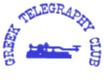

GTC: Greek Telegraphy Club (Grekiska telegrafiklubben)
Följande brev skickades ut i telegrafivärlden för att presentera klubben.
Grekiska telegrafiklubben
(SV-CW-C) (Sedan 1998)
en medlem i EUCW
HELLINIKI LESHI TILEGRAFIAS
** MÅL, STADGAR och REGLER **
Aten, 3dje november 1998
Kära telegrafivänner i hela världen...
Den grekiska telegrafiklubben grundades i oktober 1998 som en oberoende grekisk klub och vill åstadkomma:
Att marknadsföra användningen av telegrafi på amatörradiobanden, att uppmuntra nykomlingar på telegrafi och att uppmuntra och bibehålla vänskap hos radiotelegrafioperatörer.
GTC är också ett starkt tryck mot de krafter som vill utrota telegrafi som en amatörradiokommunikationsmod.
Innan vi bestämde oss för att samlas i en telegrafiklubb i vårt land, sökte vi under flera år efter vad grupper och organisationer med liknande mål gjort i Europa och på andra ställen och slutligen gjorde vi det för att stödja och dela den gemensamma kampen att marknadsföra, skydd och försvara telegrafins, särskilt under nuvarande omständigheter.
Här i SV-landet, är huvuddelen av amatörerna fortfarande långt ifrån tankarna att inte kräva telegrafi vid amatörradioproven, men eftersom saker kan ändras snabbt, vill vi samla tillräckligt med styrka för att kämpa emot alla nuvarande och framtida hot mot vår älskade telegrafi.
Även om Grekland är ett litet land finns det ett stort antal mycket erfarna telegrafioperatörer som under många år har varit till sjöss som radiooperatörer, i handelsflottan, som fortfarande idag är en av de största flottorna i världen.
Idag är många av dem radioamatörer, och telegrafioperatörer på amatörradiobanden, använder radiovågorna, och har kul när de kör sin favoritmod.
Lyckligtvis för oss finns det också ett stort antal nykomlingar som blir förälskade i morsekod. Vi tycker att det är en mycket viktig plikt för alla de gamla att hålla dessa i ständig kontakt med telegrafi, som en grundläggande sak i amatörradiovärlden.
På ett möte vi hade för några dagar sedan, diskuterade vi frågor om diplom, tävlingar, websidebyggande mm och nu kan vi säga att många dessa saker kommer att lösas på ett bra sätt.
För närvarande, som en ny systerklubb, kommer vi att deltaga i de aktiviteter som finns tillgängliga i EUCW-klubbarna, (dvs. tävlingar etc), och göra vårt bästa för att de aktiviteterna skall få framgång. [Språket är i detta stycke ganska egendomligt. Jag har försökt återskapa det jag tror menas men jag kan ha misstolkat. Översättarens anmärkning.]
Vi vill också skapa goda relationer med ett ärligt och öppet samarbete, och nära kontakter mellan GTC (SV-CW-C) och stora EUCW-klubbar som, Deutscher Telegraphy Club e.V. (DL-CW-C) (Tyska telegrafiklubben), Activity Group Telegrafie e.V. (AGCW-DL), FISTS, Union Francaise Telegrafie (UFT) (Franska telegrafiunionen), Italian Telegraphy Club (Italienska telegrafiklubben) och andra, i syfte att förstärka och föra fram vår gemensamma marknadsföring av våra mål.
GTC representerar telegrafins intressen i Grekland, genom dess samarbete med RAAG (Radio Amateur Assn of Greece) (den grekiska amatörradioföreningen), och också alla andra redan existerande mindre SV-klubbar.
Vår klubbs inriktning är mycket enkel. Vi är en oberoende organisation som uteslutande marknadsför telegrafins intressen inom amatörradion. Vi tillåter grekiska radioamatörer att bli medlemmar om de vill och det räcker med deras hedersord att de ställer upp på våra föresatser och håller med om våra mål.
GTC erkänner att det finns många andra som har lika djupa intressen i denna förnämliga mod och bjuder in dem till att förhöra sig om medlemsskap. Detsamma gäller för utlänningar som vill gå med. Ingen avgift krävs av utlänningar. Medlemsskapet är helt gratis.
Klubbens ledning består av alla de konstitutionerande medlemmarna, inte mindre än 22 personer. För att klubben skall fungera effektivt kommer ett verkställande utskott att tas fram.
73, de Yorgos SV1NA (för det verktställande utskottet i GTC)
sv1na (at) hotmail.com
SV - CW - Medlemmar
Tillbaka till listan över klubbar
Tillbaka till EUCWs startsida